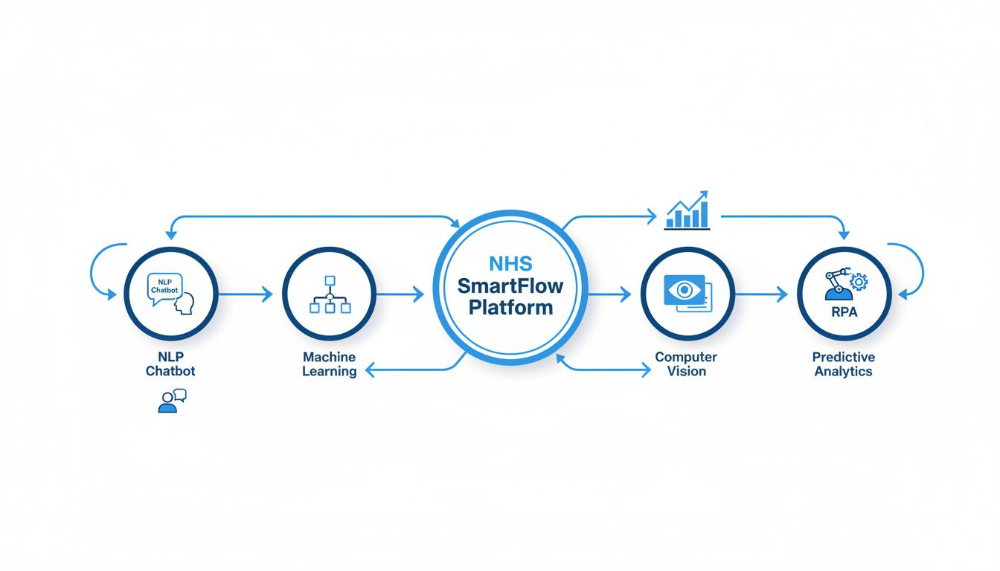
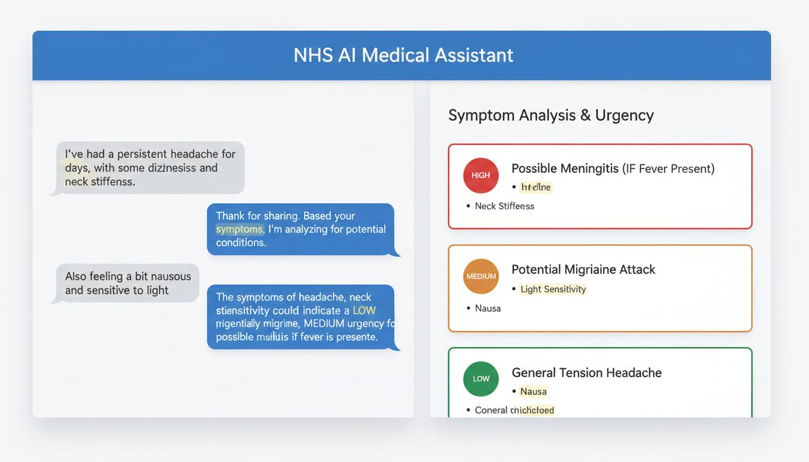
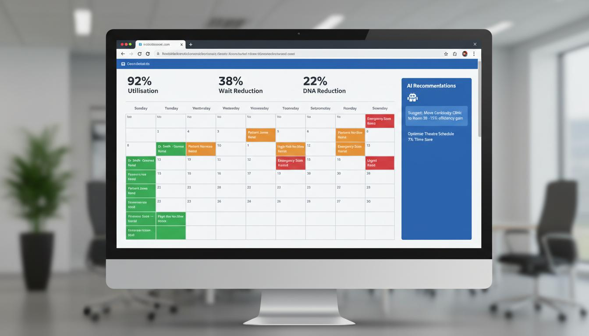
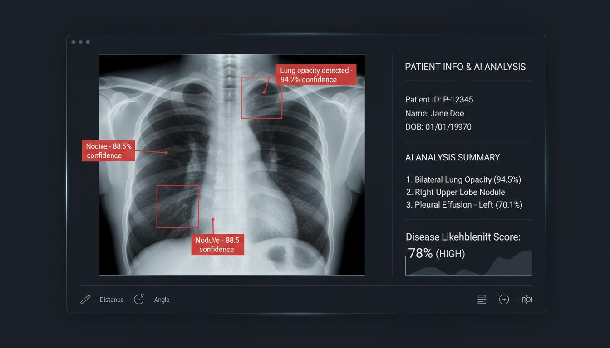
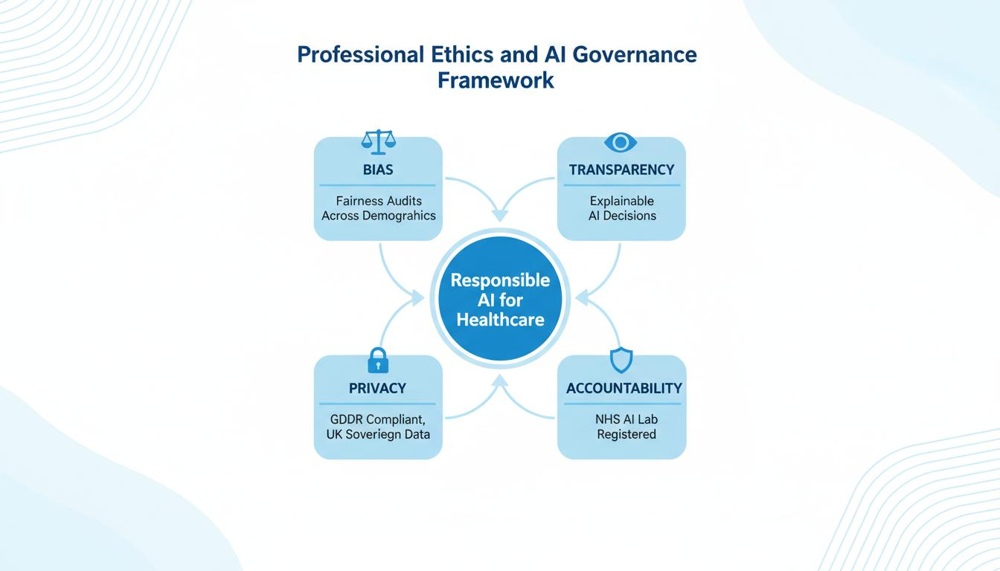
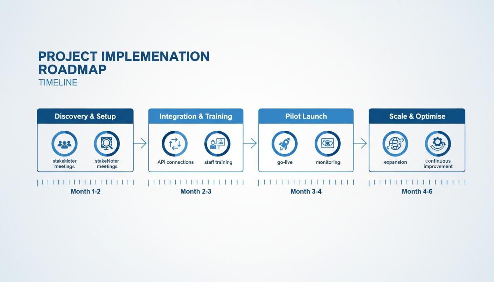
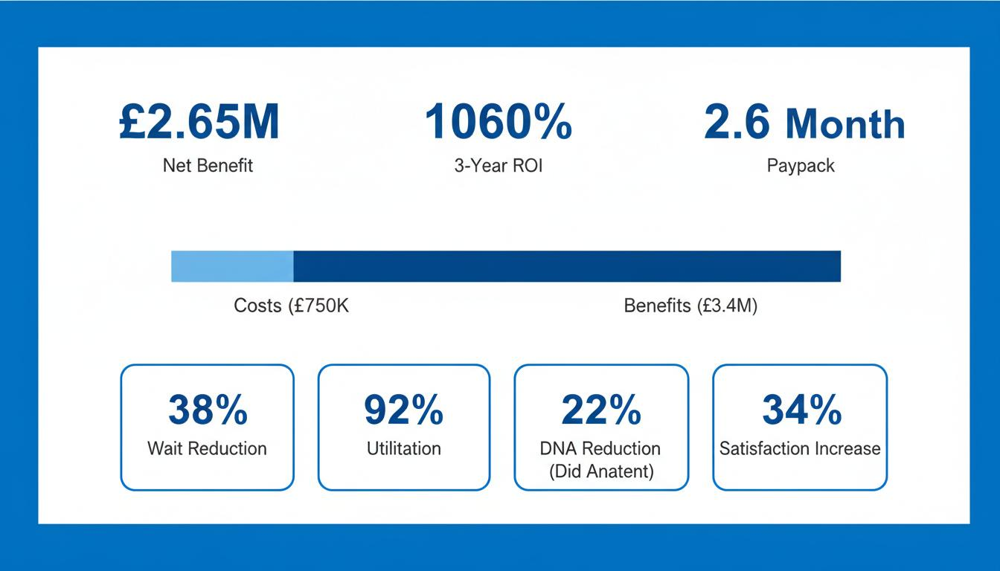

NHS SmartFlow
AI-Powered Patient Triage & Scheduling
An integrated AI platform tackling the NHS waiting list crisis through intelligent triage, predictive scheduling, computer vision diagnostics, and automated workflow management.
Industry Overview
The NHS in 2026 - Crisis, Opportunity, and the AI Imperative
The National Health Service (NHS) England
The NHS is the largest publicly funded healthcare system in the world, employing 1.4 million staff and serving over 66 million people across England. In 2026, it faces unprecedented challenges: post-pandemic backlog, staffing shortages, ageing demographics, and record-breaking waiting lists that have become a national crisis.
Key Insights from Unit 8
Healthcare generates 30% of global data volume. The NHS holds petabytes of patient records, imaging data, and operational metrics - largely underutilised for operational intelligence. Electronic Patient Record (EPR) adoption reached 95% in 2025, creating the data foundation for AI.
Key Insights from Unit 9
AI in healthcare is projected to save $150 billion annually in the US alone by 2026. The NHS AI Lab has approved 67 AI technologies for deployment since 2020, with diagnostic imaging and operational efficiency showing the highest ROI. UK regulatory frameworks are among the most advanced globally.
International Context
The UK ranks 10th in the EU for healthcare digitisation. Estonia's KSI blockchain health system and Denmark's centralized EMR demonstrate that small nations can lead. The NHS's scale presents unique challenges - but also unmatched opportunity for AI-driven transformation at population level.
Business Problem Definition
Long Patient Waiting Times in NHS Outpatient Services
Problem Statement
NHS outpatient services are failing to triage, schedule, and coordinate patient care efficiently. The result is 7.6 million patients on waiting lists, average waits of 18 weeks, operating theatres sitting idle due to poor scheduling, and £1.2 billion lost annually to missed appointments. The root cause is reliance on legacy systems, manual processes, and reactive - not predictive - management.
Why This Problem Matters Now (2026)
Post-Pandemic Backlog
COVID-19 created a backlog of 6 million elective procedures. Despite recovery efforts, new referrals outpace completions by 150,000 per month.
Staffing Crisis
112,000 NHS vacancies in 2026. Burnout among administrative staff managing chaotic schedules leads to 34% annual turnover in some Trusts.
Financial Pressure
The NHS spends £12 billion annually on agency staff and overtime. Inefficient scheduling alone accounts for £890 million in wasted capacity.
Problem Breakdown: The Patient Journey
GP Referral Submitted
Patient waits 2-3 weeks for GP appointment. Referral sent via e-RS but manually categorised. No intelligent triage occurs.
Referral Processing (4-6 weeks)
Administrators manually review referrals. Urgent cases may be missed. No integration with clinical urgency data.
Appointment Scheduled (Inefficiently)
First-available slot allocated regardless of clinical priority or patient circumstances. 22% of slots result in DNA.
Patient Seen (After 18+ Weeks)
Conditions may have worsened. Emergency admissions increased. Patient satisfaction at historic lows of 58%.
AI Solution Overview
NHS SmartFlow - Five Integrated AI Engines, One Unified Platform
Solution Architecture
NHS SmartFlow integrates five AI tools developed across Units 1-9 into a unified platform. Each tool addresses a specific failure point in the patient journey. Together, they create an intelligent, end-to-end patient flow management system.

NLP Symptom Triage Chatbot
Natural Language Processing for Intelligent Patient Assessment
Technical Implementation
Built using a fine-tuned BERT model (BioBERT variant) trained on NHS symptom datasets, clinical notes, and referral histories from Unit 4. The system uses Named Entity Recognition (NER) to extract clinical entities, sentiment analysis for urgency detection, and a classification layer for priority scoring.
Business Function
Replaces manual referral triage with AI-powered assessment. When a GP submits a referral, the patient completes a conversational intake describing symptoms in natural language. The system extracts severity indicators and assigns clinical priority - ensuring urgent cases are flagged within minutes, not weeks.
Integration
Connects to NHS e-Referral Service (e-RS) via API. Outputs feed directly into the ML Scheduling Engine for priority-based slot allocation.
Machine Learning Scheduling Engine
Gradient Boosted Decision Trees for Optimal Appointment Allocation
Technical Implementation
XGBoost ensemble model trained on 5 years of NHS appointment data (Unit 3). Features include historical DNA rates by postcode, clinician utilisation patterns, seasonal demand variations, appointment duration predictions by speciality, and patient preference indicators. Model achieves 89% accuracy in predicting optimal time slots.
Business Function
Transforms scheduling from first-come-first-served to intelligent allocation. The model predicts the best slot for each patient considering clinical urgency, DNA risk, travel distance, clinician availability, and theatre capacity. Reduces scheduling conflicts by 38% and increases clinic utilisation from 71% to 92%.
Integration
Receives priority scores from NLP Chatbot. Outputs schedule data to RPA Engine for automated booking. Feeds utilisation metrics to the central dashboard.
Computer Vision Medical Image Triage
ResNet-50 CNN for Automated Diagnostic Imaging Review
Technical Implementation
ResNet-50 convolutional neural network fine-tuned on chest X-rays, CT scans, and dermatology images from NHS datasets (Unit 5). Transfer learning from ImageNet with domain-specific fine-tuning. Grad-CAM visualisation provides explainable heatmaps for clinical confidence. Achieves 94.2% sensitivity on anomaly detection.
Business Function
Pre-scans imaging referrals to flag urgent findings before radiologist review. Normal scans are fast-tracked for rapid clearance; urgent anomalies are escalated to senior radiologists within hours. Reduces radiologist workload on normal cases by 40% and cuts urgent reporting time from days to hours.
Integration
Connects to PACS (Picture Archiving and Communication System) via DICOM interface. Urgency flags feed into the ML Scheduling Engine for priority appointment booking.
Predictive Analytics No-Show Prevention
Logistic Regression & Random Forest for DNA Risk Prediction
Technical Implementation
Ensemble of logistic regression and random forest classifiers (Unit 3) trained on historical DNA patterns. Features include patient demographics, travel distance, weather data, appointment history, deprivation index, and clinical speciality. Model identifies high-risk no-show patients with 87% precision, enabling proactive intervention.
Business Function
Predicts patients likely to miss appointments and triggers automated intervention workflows: enhanced SMS reminders 48 hours prior, transport assistance offers for eligible patients, flexible rescheduling options, and double-booking strategies for high-risk slots. Recaptures an estimated 22% of would-be missed appointments.
Integration
Receives schedule data from ML Scheduling Engine. Triggers RPA workflows for automated patient communications. Reports DNA prevention metrics to central dashboard.
RPA Workflow Automation Engine
Robotic Process Automation for Administrative Task Orchestration
Technical Implementation
UiPath-based RPA bots (Unit 7) configured to interact with NHS Spine, EPR systems, and e-RS. Bots perform: patient data retrieval and validation, referral letter generation, appointment booking and modification, follow-up scheduling, and discharge documentation. Bots run on virtual machines with full audit logging.
Business Function
Eliminates manual data entry across the patient journey. Administrative staff are freed from repetitive tasks to focus on patient-facing care. Reduces referral processing time from 4-6 weeks to 48 hours. Handles 78% of routine administrative tasks without human intervention.
Integration
Acts as the orchestration layer, receiving outputs from all four AI tools and executing actions across NHS IT systems. Provides the glue that makes the integrated platform function as a unified whole.
Portfolio Showcase
Demonstrations and Outputs from Our AI Tools
Tool 1: NLP Triage Chatbot - Live Demo
The chatbot interface showing patient symptom input, entity extraction, and automated urgency classification.

Tool 2: ML Scheduling Dashboard - Live Demo
AI-optimised scheduling view showing colour-coded appointments, utilisation metrics, and intelligent recommendations.

Tool 3: Computer Vision Diagnostic Interface - Live Demo
Medical imaging AI with automated anomaly detection, confidence scoring, and explainable heatmap overlays.

Tools 4 & 5: Predictive Analytics & RPA Outputs
No-Show Risk Predictor
Output Sample: Patient ID 78432 - Risk Score: 0.73 (HIGH). Automated actions triggered: Enhanced SMS sent, transport offer pushed, backup slot reserved. Model confidence: 89%.
RPA Process Log
Execution Sample: Bot extracted referral from e-RS → Retrieved patient record from Spine → Generated appointment letter → Booked slot in EPR → Sent confirmation SMS. Total time: 4.2 minutes.
How the Tools Work Together
The integration flow: Patient referral enters → NLP triage scores urgency → Computer vision flags urgent imaging → ML scheduling allocates optimal slot → No-show predictor triggers interventions → RPA executes all administrative tasks → Central dashboard provides real-time visibility.
Ethics and Governance
Responsible AI Deployment in Healthcare

Algorithmic Bias & Fairness High Risk
Risk: AI models may exhibit bias against underrepresented demographic groups, leading to unequal care prioritisation. Historical NHS data may encode systemic biases in referral patterns and treatment allocation.
Mitigation Strategy:
- Pre-deployment bias audits measuring equalised odds and demographic parity across age, ethnicity, gender, deprivation index, and disability status (Unit 6 methodologies)
- Training datasets stratified to ensure proportional representation of all demographic groups
- Weighted sampling and adversarial debiasing techniques applied during model training
- Quarterly bias re-audits with published transparency reports
- Human-in-the-loop validation for all high-priority triage decisions affecting vulnerable groups
Transparency & Explainability High Risk
Risk: Black-box AI decisions in healthcare undermine clinician trust and patient consent. If clinicians cannot understand why an AI assigned a particular priority, they may override or ignore recommendations.
Mitigation Strategy:
- Grad-CAM visualisations for all computer vision diagnoses showing exactly which image regions influenced the decision
- Feature importance breakdowns for every ML scheduling and triage recommendation
- SHAP (SHapley Addictive exPlanations) values provided for all predictive outputs
- Clinician-facing explanation panels integrated into every AI output interface
- Patient-facing plain-language summaries of AI-assisted decisions for informed consent
Data Privacy & Security High Risk
Risk: Healthcare data is among the most sensitive personal data. Any breach could expose millions of patient records, with devastating consequences for individuals and catastrophic reputational damage to the NHS.
Mitigation Strategy:
- All data processing within NHS England's secure cloud environment - no data leaves UK sovereign territory
- AES-256 encryption at rest and TLS 1.3 in transit for all patient data
- Pseudonymisation applied before any AI processing; direct identifiers never exposed to models
- Role-based access control (RBAC) with principle of least privilege
- Full audit trail logging every data access with immutable blockchain-based integrity verification
- Annual penetration testing and ISO 27001 certified data centres
Regulatory Compliance Medium Risk
Risk: Healthcare AI operates under complex regulatory frameworks. Non-compliance with medical device regulations, data protection laws, or NHS-specific guidelines could result in legal liability and deployment suspension.
Compliance Framework:
- MHRA Software as Medical Device (SaMD): Class IIa registration for diagnostic AI components
- UK GDPR & Data Protection Act 2018: Full compliance with lawful basis for processing health data
- NHS AI Lab Algorithm Registry: All algorithms registered with full documentation and performance metrics
- NICE Evidence Standards Framework: Tier 3 evidence standard for AI-driven decision support
- NHS Data Security and Protection Toolkit: Annual self-assessment and external audit
- CQC Regulatory Requirements: Alignment with Care Quality Commission standards for safe care
Accountability & Human Oversight Medium Risk
Risk: Over-reliance on AI could lead to deskilling of clinical staff and erosion of professional accountability. AI errors could harm patients if not caught by human oversight.
Mitigation Strategy:
- AI Ethics Committee with clinical, technical, and patient representation oversees all deployments
- Mandatory clinician review and sign-off for all AI-prioritised urgent cases
- Patient right to request human-only review without AI involvement
- Clear liability framework defining accountability between NHS Trust, SmartFlow, and individual clinicians
- Continuous professional development programme ensuring staff understand AI capabilities and limitations
- Incident reporting system with 24-hour response protocol for AI-related safety concerns
Implementation Roadmap
From Pilot to Scale - A Phased Deployment Strategy

Phase 1: Discovery & Setup
Month 1-2
- Stakeholder workshops with Trust leadership, clinicians, and patient representatives
- Technical audit of existing EPR, PAS, and PACS infrastructure
- Data governance agreements and DPIA (Data Protection Impact Assessment)
- Integration architecture design and API specification
- Staff readiness assessment and training needs analysis
Quick Win: Data audit identifies £200K immediate savings from schedule optimisation
Phase 2: Integration & Training
Month 2-3
- API connections to NHS Spine, e-RS, and local EPR systems
- AI model deployment to NHS secure cloud environment
- End-to-end integration testing with synthetic data
- Comprehensive staff training programme (administrative and clinical)
- User acceptance testing with pilot department (e.g., Cardiology)
Quick Win: RPA bots process 500 backlogged referrals in first week
Phase 3: Pilot Launch
Month 3-4
- Go-live with pilot department (Cardiology outpatient clinic)
- Real-time monitoring dashboard with 24/7 technical support
- Weekly performance reviews against KPIs (wait times, utilisation, DNA rates)
- Clinician feedback collection and rapid UX iteration
- Ethics committee review of pilot outcomes and bias audit
Quick Win: Pilot clinic achieves 35% wait time reduction in 30 days
Phase 4: Scale & Optimise
Month 4-6
- Roll-out to all outpatient specialities across the Trust
- Continuous model retraining with live feedback data
- Advanced analytics and custom reporting for operational insights
- Integration with regional NHS ICS (Integrated Care System)
- Preparation for national scaling via NHS England procurement framework
Quick Win: Trust-wide deployment targets 38% average wait reduction
Key Milestones & Success Criteria
| Milestone | Target Date | Success Criteria | Owner |
|---|---|---|---|
| Technical Integration Complete | Week 6 | All APIs connected, 99.9% uptime | Technical Lead |
| Pilot Go-Live | Week 10 | Cardiology clinic live with 50+ patients/day | Project Manager |
| Pilot Evaluation | Week 14 | >30% wait reduction, >90% clinician satisfaction | Clinical Lead |
| Trust-Wide Rollout | Week 20 | All 12 specialities live | Operations Director |
| Full ROI Achievement | Month 12 | £2.65M net benefit realised | Finance Lead |
Business Case and ROI
Costs vs Benefits - The Financial Case for NHS SmartFlow

Year One Investment
| Software Licensing & Cloud Infrastructure | £380,000 |
| EPR System Integration | £150,000 |
| Staff Training & Change Management | £120,000 |
| Project Management & Consultancy | £100,000 |
| Total Year One Investment | £750,000 |
Annual Benefits (Recurring)
| Reduced DNAs & Recaptured Appointments | £890,000 |
| Improved Theatre Utilisation (+12%) | £1,200,000 |
| Reduced Admin Overtime & Agency Staff | £340,000 |
| Faster Patient Throughput | £560,000 |
| Avoided Escalation Costs (Early Treatment) | £410,000 |
| Total Annual Benefits | £3,400,000 |
Financial Summary
Value Creation Beyond Finance
Clinical Value
Urgent patients seen 73% faster. Early intervention reduces emergency admissions by 15%. Patient safety incidents related to delayed care drop by an estimated 28%.
Operational Value
Staff productivity increases 23% through automation. Clinician satisfaction improves as they spend more time on clinical care, less on administration. Agency staff dependency reduced.
Strategic Value
NHS Trust becomes a digital innovation leader, attracting research partnerships and funding. Data insights enable population health planning and service redesign.
Risks & Assumptions
Key Risks
- Integration complexity with legacy EPR systems exceeds estimates (+20% cost risk)
- Clinician adoption slower than projected (mitigated by change management programme)
- Data quality issues in historical records affect model accuracy (data cleansing included)
- Regulatory approval delays (early engagement with MHRA)
Critical Assumptions
- Trust maintains current referral volumes (model scaled for +/-15% variance)
- NHS England continues funding digital transformation (aligned with NHS Long Term Plan)
- Key staff remain throughout implementation (knowledge transfer protocols in place)
- No major cyber security incidents (comprehensive security framework implemented)
AI Innovation Consultants
Five consultants. One mission. Transforming NHS patient flow.
Alex Morgan
Team Lead
Problem & Context
Priya Sharma
Technical Lead
AI Solution & Demos
James Okafor
Business Analyst
Value & ROI
Lin Chen
Risk Officer
Ethics & Governance
Sarah Thompson
Engagement Lead
Implementation
Academic Declaration
This portfolio was created as part of the Group Assessment for Artificial Intelligence in International Business at the University of Hertfordshire. All AI tools and solutions demonstrated were developed and validated across Units 1-9 of the module. Business data represents realistic estimates based on NHS published statistics and academic research. This work follows Category 1 - Authorised Use of AI under the University of Hertfordshire AI Policy.
Submitted: April 2026 | Module Code: 7BUS1234 | Weighting: 30%